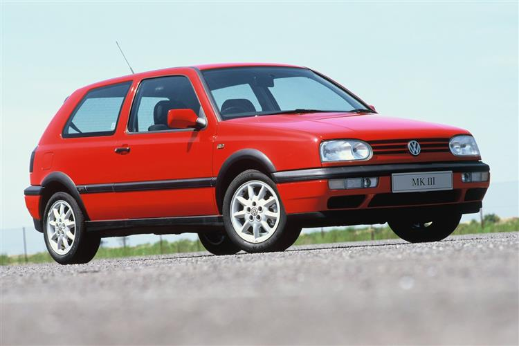

The MK3 GTI


The MK3 GTI was the successor to the MK2 GTI. The MK3 initially used a 2.0L 16 valve inline 4 making about 148 horsepower. In the time between generations, Volkswagen had developed a new engine known as the VR6. The VR6 was a combination of an inline engine and a “V” shaped engine. It had 6 cylinders and made 175 horsepower. This engine made the car very fast, and gave it a unique exhaust tone. The styling of the body favored rounded edges as opposed to its predecessor’s boxy styling.
- 2.0L 16 valve inline 4, 2.8L VR6
- 5 speed manual
- 2,403 lbs., 2601lbs.
- 148 Horsepower, 174 Horsepower
- 133 lb.-ft. torque, 173 lb.ft. torque